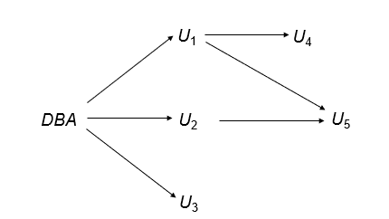
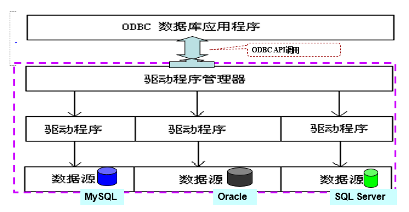
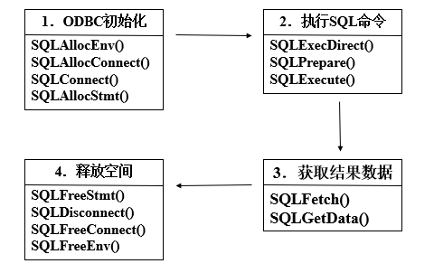

约 2105 个字 168 行代码 3 张图片 预计阅读时间 13 分钟
Chap 4 | Advanced SQL
章节启示录
本章节主要涉及高级SQL相关的语句编写。理解上难度不大，但要熟练运用，还是有难度的！。
1.SQL Data Types and Schemas¶
1.1 User-defined types¶
Create type person_name as varchar (20)
Create table student
(sno char(10) primary key,
sname person_name,
ssex char(1),
birthday date)
Drop type person_name
1.2 Domains¶
Create domain Dollars as numeric(12, 2) not null;
Create domain Pounds as numeric(12,2);
Create table employee
(eno char(10) primary key,
ename varchar(15),
job varchar(10),
salary Dollars,
comm Pounds);
对比
与 TYPE 不同的是，DOMAIN 是在现有基本类型的基础上添加了约束和限制的新类型，它是对现有类型进行包装的一种方式。DOMAIN 允许我们在不修改底层数据类型的情况下，根据数据类型的特定需求创建新类型。
1.3 Large-object types¶
大型对象（例如，照片、视频、CAD 文件等）将以大型对象的方式存储：
- blob: 二进制大型对象 （Binary Large Object），对象是大量未解释的二进制数据（其解释留给数据库系统外部的应用程序）
- clob: 字符大对象 -- 对象是字符数据的大型集合，当查询返回大型对象时，将返回指针，而不是大型对象本身。
BLOB in MySQL
- TinyBlob ： 0 ~ 255 bytes.
- Blob： 0 ~ 64K bytes.
- MediumBlob ： 0 ~ 16M bytes.
- LargeBlob : 0 ~ 4G bytes.
2.Integrity Constraints¶
完整性约束：确保当数据库的授权更改时，不会导致数据一致性的丢失。
2.1 Constraints on a single relation¶
- Not null
- Primary key
- Unique
- Check (P), where P is a predicate
前三者之前已经介绍过，这里我们重点来看第四种约束方式。
Check command:
Create table branch2
(branch_name varchar(30) primary key,
branch_city varchar(30),
assets integer not null,
check (assets >= 100))
e.g:
Create domain hourly-wage numeric(5, 2)
Constraint value-test check(value > = 4.00)
- 子句约束值测试是可选的;用于指示更新违反了哪个约束。
2.2 Assertions¶
Assertion是一个谓词，表示我们希望数据库始终满足的条件。它将对多个关系进行复杂的检查条件！
Assertion command:
e.g:
每个分行的所有贷款金额的总和必须小于该分行所有账户余额的总和。
2.3 Triggers¶
Triggers是系统自动执行的语句，在数据库数据被修改时会自动触发，并执行预先设定好的程序。
要设计Trigger的机制，我们必须设计以下两点：
- 指定执行触发器的条件。
- 指定触发器执行时要执行的操作。
e.g:
假设银行不允许负账户余额，而是通过（以下操作）处理透支：
1.将帐户余额设置为零
2.创建透支金额的贷款，为该贷款提供与透支账户的帐号相同的贷款编号 那么执行触发器的条件就是：对账户关系的更新导致了余额值为负值。CREATE TRIGGER overdraft-trigger after update on account referencing new row as nrow for each row when nrow.balance < 0 begin atomic insert into borrower (select customer-name, account-number from depositor where nrow.account-number = depositor.account-number) insert into loan values (nrow.account-number, nrow.branch-name, – nrow.balance) update account set balance = 0 where account.account-number = nrow.account-number end
Trigger的相关性质
- 触发事件可以是插入、删除或更新。
-
更新时的触发器可以限制为特定属性。
e.g:
Create trigger overdraft-trigger
after update of balance on account -
可以引用更新前后的属性值。
Referencing old row as: for deletes and updates.
Referencing new row as: for inserts and updates. -
触发器不能用于直接实现外部操作。
- 总结一下提到的三个操作：Check,Assertion,Trigger。
| Check | Assertion | Trigger |
|---|---|---|
| 单表中做简单判断 | 可以做复杂判断操作 | 可以做复杂判断操作 |
| 性能较好 | 效率较低 | ？（应该比Check性能要差一些） |
| 只能阻止 | 只能阻止 | 可以做额外操作 |
3.Authorization¶
这里我们主要研究针对DATABASE的授权权限。
对数据库各部分的授权形式:
- Read authorization：允许读取，但不允许修改数据。
- Insert authorization：允许插入新数据，但不允许修改现有数据。
- Update authorization：允许修改，但不允许删除数据。
- Delete authorization：允许删除数据。
修改数据库架构的授权形式:
- Index authorization：允许创建和删除索引。
- Resources authorization：允许创建新关系。
- Alteration authorization：允许添加或修改关系中的属性。
- Drop authorization：允许删除关系。
- 授予权限：从一个用户到另一个用户的授权传递可以用授权图来表示。
1.此图的节点是用户。
2.图形的根是数据库管理员。
3.\(U_i \longrightarrow U_j\)表示用户 \(U_i\) 已向 \(U_j\) 授予了权限。

3.1 GRANT¶
GRANT command:
- <privilege list>:操作
- <user list>：
user-ids
public：允许所有有效用户授予权限
A role:（稍后会详细介绍）
e.g:
允许被授予权限的用户将权限传递给其他用户。
Roles
通过创建相应的“角色”，可以只指定一类用户具有通用权限的角色。
3.2 Revoking Authorization¶
Revoke 语句用于撤销授权。
Revoke command:
e.g:
Revoke select on branch from U1, U3 cascade;
3.3 Audit¶
审计跟踪是对数据库的所有更改（插入/删除/更新）的日志。
Audit command:
/*语句审计：*/
AUDIT <st-opt> [BY <users>] [BY SESSION | ACCESS]
[WHENEVER SUCCESSFUL | WHENEVER NOT SUCCESSFUL]
- 当 BY <users> 缺省，对所有用户审计。
- BY SESSION每次会话期间，相同类型的需审计的SQL语句仅记录一次。
- 常用的<st-opt>：table, view, role, index, …
- 取消审计：NOAUDIT …(其余同audit语句)。
e.g:
审计用户scott每次成功地执行有关table的语句 (create table, drop table, alter table)。
/*对象（实体）审计*/
AUDIT <obj-opt> ON <obj> | DEFAULT [BY SESSION | BY ACCESS]
[WHENEVER SUCCESSFUL | WHENEVER NOT SUCCESSFUL]
- 实体审计对所有的用户起作用。
- ON <obj> 指出审计对象表、视图名。
- ON DEFAULT 对其后创建的所有对象起作用。
- 取消审计：NOAUDIT …
e.g:
审计所有用户对student表的delete和update操作。
怎么看审计结果？
- 审计结果记录在数据字典表: sys.aud$中，也可从dba_audit_trail, dba_audit_statement, dba_audit_object中获得有关情况。
- 上述数据字典表需在DBA用户（system）下才可见。
4.Embedded SQL¶
SQL功能不完备（计算，资源...），因此 SQL 标准定义了各种编程语言（如 Pascal、PL/I、Fortran、C 和 Cobol）的 SQL 嵌入。
嵌入 SQL 查询的语言称为宿主语言，主机语言中允许的 SQL 结构包括嵌入式 SQL。
EXEC SQL 语句用于识别对预处理器的嵌入式 SQL 请求：EXEC SQL <嵌入式 SQL 语句> END_EXEC注意：这因语言而异，例如，Java 嵌入使用 # SQL { .... }
4.1 Query¶
- 单行查询：
变量的使用
:V_an, :bn, :bal是宿主变量，可在宿主语言程序中赋值，从而将值带入SQL。宿主变量在宿主语言中使用时不加:号。
- 多行查询
一个例子🌰
在宿主语言中，查找某个帐户中超过可变金额美元的客户的姓名和城市。
-
Step1:在 SQL 中指定查询并为其声明游标(CURSOR)
-
Step2:OPEN 语句使查询被计算
-
Step3:FETCH 语句将查询结果中的一个元组的值放在宿主语言变量上。
重复调用以提取查询结果中的连续元组。
-
Step4:CLOSE 语句使数据库系统删除保存查询结果的临时关系。
上述细节因语言而异，例如，Java 嵌入定义了 Java 迭代器来单步执行结果元组。
4.2 Updates¶
-
单行修改:
-
多行修改： 可以通过声明游标来更新元组。
Exec SQL BEGIN DECLARE SECTION; char an[20]; float bal; Exec SQL END DECLARE SECTION; EXEC SQL DECLARE csr CURSOR FOR SELECT * FROM account WHERE branch_name = ‘Perryridge’ FOR UPDATE OF balance; …… EXEC SQL OPEN csr; While (1) { EXEC SQL FETCH csr INTO :an, :bn, :bal; if (sqlca.sqlcode <> SUCCESS) BREAK; …… /* 由宿主语句对an, bn, bal中的数据进行相关处理(如打印) */ EXEC SQL update account set balance = balance + 100 where CURRENT OF csr; } …… EXEC SQL CLOSE csr; ……
5.Dynamic SQL¶
允许程序在运行时构造和提交 SQL 查询。
char *sqlprog = “update account
set balance = balance * 1.05
where account_number = ?”
EXEC SQL PREPARE dynprog FROM :sqlprog;
char v_account [10] = “A_101”;
……
6.ODBC and JDBC¶
6.1 ODBC¶
ODBC提供了一个公共的、与具体数据库无关的应用程序设计接口API 。它为开发者提供单一的编程接口，这样同一个应用程序就可以访问不同的数据库服务器。 
- ODBC编程基本流程:

一个例子🌰
int ODBCexample() // 程序结构
{
RETCODE error;
HENV env; /* environment */
HDBC conn; /* database connection */
SQLAllocEnv(&env);
SQLAllocConnect(env, &conn); /* 建立连接句柄 */
SQLConnect (conn, “MySQLServer”, SQL_NTS, “user”, SQL_NTS, “password”, SQL_NTS); /* 建立用户user与数据源的连接， SQL_NTS表示前 一参量以null结尾 */
{ …. Main body of program … } /* 细节在下方 */
SQLDisconnect(conn);
SQLFreeConnect(conn);
SQLFreeEnv(env);
}
/*Main body of program*/
……
{char branchname[80];
float balance;
int lenOut1, lenOut2;
HSTMT stmt;
SQLAllocStmt(conn, &stmt); /* 为该连接建立数据区，将来存放查询结果 */
char * sqlquery = “select branch_name, sum (balance) from account
group by branch_name”; /* 装配SQL语句 */
error = SQLExecDirect(stmt, sqlquery, SQL_NTS); /* 执行sql语句,查询结果存放到数据区stmt ，同时sql语句执行状态的返回值送变量error*/
6.2 JDBC¶
JDBC 是一个 Java API，用于与支持 SQL 的数据库系统进行通信。
public static void JDBCexample(String dbid, String userid, String passwd)
{
try {
Class.forName ("oracle.jdbc.driver.OracleDriver");
Connection conn = DriverManager.getConnection
("jdbc:oracle:thin:@aura.bell_labs.com:2000:bankdb", userid, passwd);
Statement stmt = conn.createStatement();
… Do Actual Work ….
stmt.close();
conn.close();
}
catch (SQLException sqle) {
System.out.println("SQLException : " + sqle);
}
}
复习时的一些补充
- 参照关系中外码的值必须在被参照关系中实际存在，或为null.
- A combination of relational-level security and view-level security can be used to limit a user’s access to precisely the data that user needs.
- SQL does not support authorization at a tuple level.
- 怎样看审计结果：
- 审计结果记录在数据字典表: sys.aud$中，也可从dba_audit_trail, dba_audit_statement, dba_audit_object中获得有关情况。
- 上述数据字典表需在DBA用户（system）下才可见。
- :V_an, :bn, :bal是宿主变量，可在宿主语言程序中赋值，从而将值带入SQL。宿主变量在宿主语言中使用时不加:号。
- The dynamic SQL program contains a ?, which is a place holder (占位符) for a value that is provided by ‘using’ variable when the SQL program is executed.